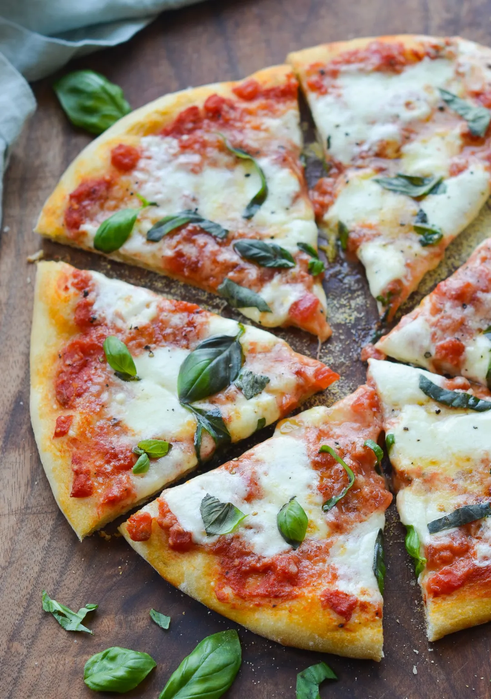

The most simple Margherita

Description
Margherita pizza is a thin-crust Naples-style pizza topped with tomato sauce, fresh mozzarella, basil leaves, and Parmigiano-Reggiano. It's easy to make at home, and you don't need a fancy oven or even a pizza stone to get pizzeria-quality results. I use a rich homemade pizza dough, a blazing hot oven, and a sheet pan to produce a crisp yet chewy pizza crust. The sauce is a speedy, no-cook Neapolitan pizza sauce made from canned San Marzano tomatoes; it has vibrant tomato flavor, and you can whip it up in 5 minutes.
Because the recipe is so simple, it's important to use high-quality ingredients and approach them with a light hand. I know it's tempting to load up on toppings, but less is definitely more here; too much sauce and cheese will make the pizza soggy. Pair these pizzas with a simple arugula salad and dinner is done!
Necessary Ingredients:
- 1 can of crushed tomatoes
- 3 medium garlic cloves, minced
- ¾ teaspoon salt
- ½ teaspoon sugar
- ½ teaspoon freshly ground black pepper
- 2 tablespoons extra-virgin olive oil
- Flour, for stretching the dough
- 2 (12-oz) homemade pizza doughs
- 8 oz fresh mozzarella, not packed in water, cubed
- ½ cup freshly grated Parmigiano-Reggiano
- ½ cup roughly chopped fresh basil, lightly packed
- 1 tablespoon cornmeal, for baking
All of the steps:
- Make the sauce by combining the crushed tomatoes, olive oil, garlic, salt, pepper, and sugar in a small bowl.
- On a lightly floured surface, using your hands, stretch and press one ball of dough into an 11-inch round.
- Transfer the dough to a cornmeal-dusted baking sheet, and gently stretch it out again so that it maintains its shape.
- Spread 1/4 cup + 2 tablespoons of the sauce over the dough, leaving a 1/2-inch border around the edges.
- Slide the baking sheet into the oven and bake for 7 minutes, until the crust is partially cooked.
- Remove from the oven, and scatter half of the mozzarella cubes over the sauce, followed by half of the Parmigiano-Reggiano.
- Slide the pan back into the oven and cook until the crust is golden brown and the cheese is melted and bubbling, about 4 minutes more.
- Remove the pizza from the oven and transfer to a cutting board. Sprinkle with the basil and slice.
Return to the top.
Return to the previous page.